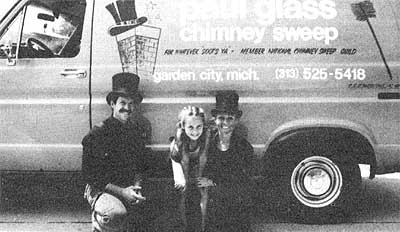

Chimney Sweeps Are Cleaning Up!
July/August 1980
This may be the best start-on-a-shoestring business that MOTHER has ever featured! What other self-employment venture do you know of that you can get into for only $2,500 . . . yet which-right from the start!-can net you $700 or more a week?
How would you like to own your own business, set your own hours, wear a top hat to work, become something of a mystical figure in your community, perform a necessary and much-needed service . . . and clear $700 or more a week? Well, chimney sweeps all over the country are doing just that, and the ones that MOTHER has talked to love every minute of it.
MOTHER staffers J. Weiland and Travis Brock, for example, recently watched Steve Curtis clean chimneys in Connecticut for four hours . . . and pocket a whopping $140 for his morning's work (Steve is averaging a gross of $1,000 a week and he's booked ahead for a month and a half). Another sweep in Mississippi had already chalked up 1977 earnings of $14,000 ($3,000 during the first 21 days of that month alone) when Travis talked to him late in October. Yet a third sweep in Michigan, who told Brock he "just works at it part time," is taking home an easy $300 to $400 a week.
In fact, the worst possible case that Travis was able to track down was a guy who lived in a remote section of Montana (there are only 11,000 people in his whole county) who charged less than recommended rates for his services, only cleaned about 12 to 16 chimneys a month on a very, very part-time basis . . . and who still was netting (for less than one full day's work) a respectable $100 a week. There just doesn't seem to be any way to fail in this business!
CHIMNEY SWEEPS OF
COURSE, SWEEP CHIMNEYS
Just what the heck do chimney sweeps do to earn that kind of money? They clean chimneys. Six to eight a day in the case of full-time sweeps . . . while part-timers generally average-two-or-three-an-evening plus a few more on the weekends. When you figure that most of the sweeps charge $40 for cleaning the first chimney on a job and $30 more for each additional one, it's easy to see how those dollars can add up. (During the four hours that Weiland and Brock followed Steve Curtis around, for instance, Steve cleaned one chimney on one house and three on another . . . for a total billing-$40 plus $40 plus $30 plus $30-of $140.)
BUT WHY?
And why would anyone fork over forty or more bucks to have some character in a black suit and top hat clean his or her chimney? That question can be answered with one word: SAFETY.
When solid fuels such as coal and wood are burned in a furnace, stove, or fireplace they-as we all know-give off welcome amounts of heat. However-as many of us do not know-those same two solid fuels also give off unwelcome amounts of two by-products: soot and creosote. And, unless a chimney is cleaned regularly, that highly flammable soot and creosote will accumulate in the flue. Where it hangs-like some fiendish fire bomb-just waiting for a chance spark to ignite it.
If the homeowner is lucky, the resulting roaring blaze will merely burn the chimney clean while filling the house with the fire's loud and extremely unnerving howls. If he's not so lucky, the unwanted fire will cremate the flue's lining and dangerously weaken the chimney. And if he's downright unfortunate, the flames will takeout the whole chimney . . . and the rest of the house along with it.
All in all there were over 40,000 chimney fires in the United States last year and, according to the National Fire Protection Association, those fires caused more than $23 million worth of damage. That's a loss of $23 million which could have been prevented if every owner of a coal- or wood-burning fireplace, furnace or stove had only understood the importance of keeping the unit's chimney clean.
THE PLOT THICKENS
There was, of course, a time-back when nearly everyone on this continent heated his or her home with either a wood or a coal-burner-that virtually everyone in North America was well aware of the havoc a chimney fire could wreak. Or, to put it another way, great-grandpa and great-grandma most certainly knew the value of keeping their chimneys clean . . . if they hadn't suffered one or more unexpected blazes themselves, they'd probably seen several neighbors and/or relatives burned out of house and home on a frigid winter's night.
But then history took a strange double twist. First-beginning right after World War II-the United States and Canada made almost a complete switch in the way the two nations heated their homes. Within just 25 to 30 years, nearly the entire population of this continent dropped "dirty, troublesome" coal and wood . . . in favor of "clean, convenient" natural gas, oil, and electricity. And second-just when the major portion of North America's old coal- and woodburning expertise had been forgotten-the "energy crisis" of the 70's suddenly forced a whole new generation, by the millions, to burn wood and coal once again.
Thanks to this quirk in our recent history, we now are surrounded by what must already be tens of millions of people who are at least supplementally heating their homes with solid fuel for the first time. And they are destined to be joined by further tens of millions of first-time coal and wood users in the years ahead. And a heck of a percentage of all those folks [a] have absolutely no inkling of the time bombs that already are building up-and will continue to build up-in their chimneys and [b] have no immediate past generation with the proper firsthand experience to warn them about the ravages of flue fires.
WHICH OPENS UP ONE HECK
OF AN OPPORTUNITY . . . .
We can draw at least three conclusions from this short history lesson:
[1] Since it now seems obvious that the "convenient" ways of heating a house-with natural gas, oil, and electricity-are going to continue getting more and more expensive as time goes on . . . it seems just as obvious that more and more families in the United States will continue making the switch back to heating with coal and wood in the years to come.
[2] Which means-whether they know it yet or not, and more and more people are discovering the fact every day-that an increasingly large percentage of this continent's population is destined to live with a steadily increasing risk of fires in their flues.
[3] Which just as surely means that anyone who can nip this growing danger in the bud is suddenly going to become very, very popular and is going to be very well rewarded starting now and continuing throughout the years ahead .
. . . FOR CHIMNEY SWEEPS!
And who is the most logical candidate to cash in on this burgeoning new demand? Who is the "anyone" most likely to become well rewarded for nipping the danger of flue fires in the bud? Why, a brand-new version of that fine old almost-mythical-character-of European folklore . . . the chimney sweep. That's who!
And that's also exactly how today's new breed of sweep is bursting upon the scene . . . as a black suited, top hatted, dancing-on-the-roof reincarnation of the character Dick Van Dyke played in the movie, Mary Poppins. Or, to put it another way, as a modern-day version of the traditional 19th century European chimney sweep.
Laugh at this showmanship if you like, but the sweeps who've tried it recently here in the U.S. and Canada have found that the legendary "top hat and tails" outfit of their trade has rocketed them to success overnight. As one of the new and very dedicated young men in the trade says:
"By re-creating the image of a 19th century sweep, we accomplish several important things. [1] We grab people's attention, thereby making it easier for us to tell them about the dangers of chimney fires. [2] We grab the media's attention, and the newspaper stories and TV features which result both help us spread the word about the hazard of flue fires and just incidentally, makes our business grow by leaps and bounds. [3] Our image puts a little fun back into life. Stop and think. Who would you rather have clean your chimney: a 20th century serviceman wearing white coveralls and a baseball cap . . . or a 19th century tradesman dressed up in top hat and tails? Hell, I've even had grown men go out of their way to shake my hand and pretty girls give me a kiss-just like something out of Mary Poppins -when they see my outfit. And [4] this simple little bit of imagery all adds up to a more lucrative operation for us. We attract people's attention, they feel good having us do a job for them, and-instead of begrudging us a reasonable fee for our services-they usually seem downright happy to pay for our work."
GOOD SWEEPS
DELIVER THE GOODS
That same young man-and every other "new breed" chimney sweep worthy of the name-is also quick to point out that his "top hat and tails" image is just that. An image. Frosting on the cake. Gilding on the lily. A lot of fun as far as it goes . . . but nothing in any way that should be considered a substitute for doing an important and worthwhile job in a craftsmanlike and highly professional manner.
Which is not the same as saying that all chimney sweeps-or even any two!-see eye to eye on just how that task should be accomplished. The job itself (breaking loose and scrubbing out every particle of soot and creosote that can possibly be removed from a flue), they agree on. Ask any three sweeps the best way to accomplish this specific objective, however, and you're sure to get at least four adamant opinions on square brushes versus round, hard brushes versus soft, long brushes versus short, weighted brushes versus unweighted, sweeping from the bottom of a chimney to the top versus the other way around, and the same kind of pros and cons about at least 5,000 other finer points of the chimney sweep's art.
All good chimney sweeps, then, do a good job of sweeping chimneys . . . and they do it without letting any of the crud get out into their clients' houses. No two chimney sweeps, though, seem to accomplish that objective in exactly the same way.
THE HEIGHT OF TECHNOLOGY
A far more advanced method of sweeping chimneys-perhaps the most advanced in the world-is the one developed by Tom Risch of Westport, Connecticut. Tom calls it the "August West System" and-for $1,385-will I sell you a complete package of the tools you'll need to make it work. (And, yes, Risch's package does include atop hat.)
One of the key elements of the August West System is a highly specialized high-volume vacuum cleaner called a "soot sweeper." Don't underestimate this piece of equipment. It is not merely a heavy-duty shop vac (which moves, maybe, 90 cubic feet of air a minute). This compact monster moves 700 cubic feet of air per minute . . . which is about eight or ten times the capacity of your average house vacuum sweeper. But that's the kind of air-moving muscle you need if you really want to keep a cascade of soot out of your clients' homes and out of your lungs. Nothing less will do.
A second key part of the August West Chimney Sweeping System is a set of specially developed fiberglass cleaning rods. These rods snap together with "quick disconnects" similar to the connectors on air-powered tools. And they're constructed of a mixture of fibers and resins and held to a diameter which makes them just flexible enough to bend around smoke shelves . . . but still rigid enough to poke a brush all the way up a chimney. The construction of the rods, furthermore, has been shrewdly calculated to make them tough and highly resistant to fractures. In the unlikely event of a break, however, the formulation of the rods' resin/fiber mixture and cure was designed to make the snap-together extensions splinter apart (like-a-green tree limb) rather than snap off clean (leaving a brush stuck in a flue somewhere). In short-just as with the August West soot sweeper-there's far more to the AW cleaning rods than meets the eye.
And there's far more to the August West profit picture than meets the eye too, thanks to the special gear just described. Because those rods and that soot sweeper make it possible, in most cases, for one man or woman (instead of two) to clean a flue or chimney entirely from the bottom (without ever getting upon the roof) . . . and do the whole job in a fast half hour (instead of the hour or hour and a half required by more traditional methods).
Steve Curtis-the personable young fellow whom Wetland and Brock watched pocket $140 for four hours work one day last fall-uses the August West System.
First Steve spreads a painter's drop cloth in front of the hearth, positions the end of his soot sweeper's inlet hose in the back of the fireplace, and turns the "dust sucker" on. He then reaches up into the fireplace's throat and removes the damper
Next Curtis chooses the proper-sized brush, snaps it onto a Flexi-rod, and pushes the brush up into the flue. More rods are snapped onto the first one and fed up into the chimney until, finally, the brush pops out the top of the stack. Steve then scrubs the flue from the top down . . . while he remains conveniently and safely indoors at the base of the chimney.
With every stroke of the brush, of course, a cascade of ashes and soot plummets into the fireplace. No problem. As fast as the black dust billows up . . . the soot sweeper sucks it away. Believe it or not, the system works so well that we couldn't even get a sequence of photographs showing how well this method of controlling an otherwise messy situation operates! There just wasn't anything to show!
Once the flue has been thoroughly cleaned, Curtis uses a smaller brush to spiff up the smoke chamber and smoke shelf. All the fine, airborne dust-as you've probably guessed-continues to disappear into the soot sweeper . . . while Steve shovels everything else into paper shopping bags. ("Don't use plastic garbage bags," Curtis says. "Because of their static electricity charges, soot sticks to the outside of the plastic sacks . . . and then falls off on your client's rug when you move them.")
If it sounds as if the August West System has chimney cleaning down to a science . . . well, it does. Using the AW streamlined method of swabbing out a flue, Steve Curtis can set up, clean a chimney, pack up, and be on his way to another job . . . all in 30 minutes or less. Which ain't a bad way to earn forty bucks.
THE OTHER SIDE
>OF THE BUSINESS
If the pay can be good, it should also be pointed out that sweeping chimneys-even with the August West System-ain't exactly a desk job. Cleaning flues-no matter how you slice it-still calls for a certain amount of physical activity . . . and Steve Curtis honestly earns every nickel that he's paid.
Nor is this an occupation that you can work at carelessly. A sweep in Washington State, for instance, recently broke his shoulder when a new extension ladder malfunctioned and dumped him on the ground. Then too, slovenly flue cleaners soon learn that customers can get very rate about soot tracked across rugs . . . and that the negligent breathing of the same soot can be exceedingly hazardous to the lungs.
In general, though, these risks of the trade are no risk at all to the careful and prudent chimney sweep. Just as the highly publicized "trade disease" of sweeps in the 1800's-skin cancer-presents no out-of-the-ordinary danger to anyone in the business who'll make regular use of soap and water.
(In the "old" days, sweeps used to climb right down into chimneys to clean them. Naturally, this coated them from head to toe with creosote and soot. The problem was then further compounded by the fact that most people bathed only infrequently in Europe in those days . . . and chimney sweeps sometimes didn't bathe at all! End result: a high incidence of skin cancer-especially cancer of the scrotum-among chimney sweeps. Which is unfortunate, since we now know that the disease could have been prevented by higher standards of hygiene.)
TO SUM UP, THEN. . . .
Sweeping chimneys may not exactly be a "lazy man's way to riches" . . . but the pay is exceptional, the demand is steadily growing for this particular service once again, and new equipment now makes the job far easier and safer than ever before. Perhaps best of all, this most definitely is one of those "dream" businesses that so many of us are always looking for: a business with flexible hours and very low overhead that requires less initial investment (figure, at most, $2,000 to get started with August West) than you can earn back in just two full weeks of work.
This may-all things considered-be the best start-on-a-shoestring enterprise that MOTHER has ever featured . . . and we're gonna be mighty surprised if a hundred or more readers of this magazine don't eventually wind up as $1,000-a week chimney sweeps. Be sure to let us know if you're one of the hundred!
Update on chimney sweeping . . .
THEM THAT'S DOING. . .
We called Paul Biskner to find out more about this sweep who made $530.00 in one day, and here's what we found:
Hello. This is Paul. Right now I'm buried in soot from head to toe, but please wait. When you hear the tone, please feel free to leave your name your telephone number and message and I'll be glad to get back to you as soon as I can. Sweeps luck, and thank you for calling Paul Glass Chimney Sweeps.
That's right. A simple telephone answering machine, which couldn't cost more than a few dollars a week to operate, holds down the fort while Paul and his pretty wife Barbera are out earning the bread.
The Biskners are the perfect bootstrap couple. They bought the August West System for $1385, had a logo done up and painted on their van, and headed right out to the county fair to drum up business. They're now doing so well that we're not even printing how much they brought in this year. But, we assure you, it's a lot more than the $18,000 Paul brings in as a firefighter. That's right! Paul and Barbera are doing this PART-TIME. They love what they're doing and swear by the August West System.
"It's kind of dirty work, but I don't mind since I really believe in what I'm doing," says Barbera whose sky-blue eyes look even bluer against her soot-covered face.
Paul just returned from lecturing on Fire Safety at the August West Convention. He added, "There's a great deal of personal satisfaction in helping others protect their lives from fire hazards. It really makes you feel great! And as wood-burning consultants, there are plenty of questions to answer and lots of advice to give."
If you'd like to be part of this growing network of sweeps across the country who use the August West System, call or write today. As more and more people burn more and more wood, the potential is mind boggling.
|
 The Paul Biskners, of Garden City. Michigan. became chimney sweeps after reading about August West in MOTHER. |
 ABOVE. August West recently sponsored the world's largest gathering of chimney sweeps. More than 200 sweeps who use the August West System exchanged trade secrets and listened to notable authorities. Notables included Dr. Jay Shelton, author of THE WOODBURNERS ENCYCLOPEDIA and WOOD HEAT SAFETY. Bob Schwartz, founder of The School for Entrepeneurs. Prof. J. W. Bartok, co-author of BURNING WOOD and Robert Ahern, insurance expert. 28 States were represented at the convention. |
|